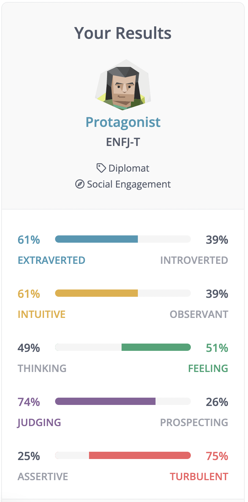
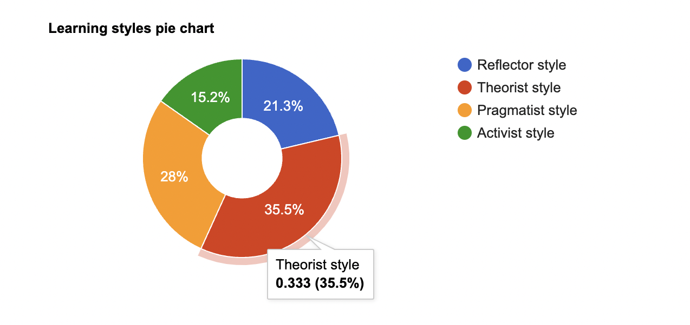
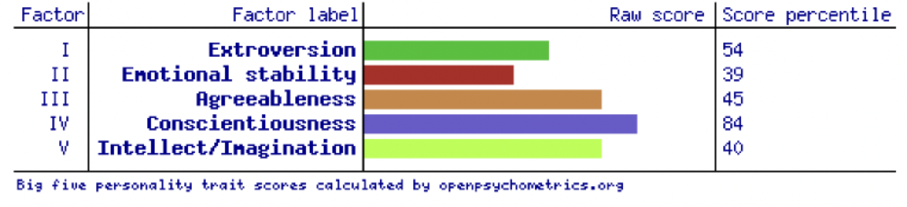

<!DOCTYPE html>
<html>
    <head>
        <title>Harshnoor | My Profile</title>
        <link href="https://cdn.jsdelivr.net/npm/bootstrap@5.1.3/dist/css/bootstrap.min.css" rel="stylesheet" integrity="sha384-1BmE4kWBq78iYhFldvKuhfTAU6auU8tT94WrHftjDbrCEXSU1oBoqyl2QvZ6jIW3" crossorigin="anonymous">
        <link rel="stylesheet" type="text/css" href="style.css">
        <link rel="preconnect" href="https://fonts.googleapis.com">
        <link rel="preconnect" href="https://fonts.gstatic.com" crossorigin>
        <link href="https://fonts.googleapis.com/css2?family=Roboto:wght@100;300;400;700&display=swap" rel="stylesheet">
    </head>
</html>
<body>
    <nav id="navbar">
        <div class="container">
            <ul>
                <li><a href="index.html">Home</a></li>
                <li><a href="about.html">About Me</a></li>
                <li><a href="interest.html">Interest in IT</a></li>
                <li><a href="job.html">Dream Job</a></li>
                <li id="current"><a href="profile.html">Profile</a></li>
                <li><a href="idea.html">Project Idea</a></li>
            </ul>
        </div>
    </nav>

    <div class="main-content">
        <div class="container">
            <h1><emphasize>&gt;</emphasize> Personal Profile</h1>

            <h2>Myers Briggs Personality test</h2>
            <div class="row">
                <div class="col-lg-4">
                    
                </div>
                <div class="col-lg-8">
                    <p><u>Personality Summary</u>: Thoughtful and idealistic, you strive to have a positive impact on other individuals and the world around you. You don’t easily shy away from an opportunity to do what’s right, even if doing so is difficult.</p>
                    <p><u>Strengths</u>:</p>
                    <ul>
                        <li>You can be counted on to see a promise and responsibility through to the end.</li>
                        <li>You rake pleasure in pursuing your hobbies, whether that’s playing games, watching movies or something else entirely. As the outcome, you rarely find yourself at a loss something interesting to do.</li>
                        <li>You often find yourself in leadership positions, you rarely lose sight of your main goal, to be of good service to other.</li>
                    </ul>
                    <p><u>Weakness</u>:</p>
                    <ul>
                        <li>You enjoy teaching others, particularly about the beliefs matter to you. But, at times, you may come forward as patronizing.</li>
                        <li>You may push others to make changes that they aren’t ready for, or simply aren’t interested in making in the first place.</li>
                        <li>You put pressure on yourself to right every wrong you encounter. However, it’s not realistic to solve all the world’s problems.</li>
                    </ul>
                </div>
                <p>I can be relied upon to fulfill a role or responsibility in a team-centred environment, as protagonists are hardworking, reliable and eager to help. Although some to these properties, some managers may take advantage of protagonist’s work ethic by overburdening them extra work. As a protagonist, I am also more likely to accept all the extra tasks to avoid letting others down. I am also more likely to look forward to collaborating with other people, as protagonists are 61% extraverted and enjoy meeting new people and making new friends. Finally, as protagonists are social, they are also more likely to help other co-workers reach their potential.</p>
                <p>In my opinion, the test is accurate to a moderate extent, but not everything is a 100% true. For example, it mentions “you rarely find yourself at a loss of something interesting to do”. In my opinion, this assessment is not accurate as there are plenty of times where I have plenty of things to do but can’t make up my mind about what I should really focus on. It also mentions that I am extraverted, However I am not as outgoing as some other extraverts. I sort of lie in this middle-ground where I prefer to stay inside, but also like to constantly chat with friends and family and socialise from the comfort of my home.</p>
            </div>

            <h2>Online Learning Style test</h2>
            <div class="row">
                <div class="col-lg-7">
                    <p><u>Description</u>: As a theorist I like to think about problems in a logical manner. I value reasonability and impartiality above all else. I aim to fit things into a logical order. I am keen on keen on theories and like to think systematically and in an ordered manner.</p>
                    <p>As a Theorist I learn best by:</p>
                    <ul>
                        <li>Storytelling</li>
                        <li>Quotes</li>
                        <li>Practicals (getting more hands on)</li>
                    </ul>
                </div>
                <div class="col-lg-5">
                    
                </div>
                <p>In a team centred environment, the team is likely to benefit from my logical thinking, as a large IT team often requires you to have a curious mind and be able to solve problems in a creative manner. My reasonability and systematic thinking are likely to help me in a team that requires a curious mind.</p>
                <p>In my opinion, the test results are accurate to a high extent. As I often like to question the why and the how of every situation. I also like to have a nice order to everything, and often make lists and like to timetable and calendar everything I can to stay organised. I also find things harder to believe that not backed up by valid evidence, which enforces that I respect reasonability over illogical matters.</p>
            </div>

            <h2>The Big 5 Personality factors test</h2>
            <div class="row">
                <div class="col-lg-6">
                    
                </div>
                <div class="col-lg-6">
                    <ol>
                        <li>Conscientiousness being my highest matched trait (84) means that I am careful and hardworking.</li>
                        <li>Extroversion being my second highest matched trait (54) means I am more outgoing and social.</li>
                        <li>Agreeableness being the middle ground (45) means that I am decently optimistic and friendly.</li>
                        <li>Intellect/Imagination being my second lowest trait (40) means that I tend to be traditional and conventional.</li>
                        <li>Emotional Stability being my lowest trait (39) means that at times I could be unstable and unbalanced.</li>
                    </ol>
                </div>
                <p>In a team environment I am likely to work well with other individuals as the test describes as outgoing and social. I am likely to be friendly to team members as I am decently agreeable and am likely to be contribute to the team effort due to Conscientiousness being my highest trait.</p>
                <p>In my opinion the results are accurate to a moderate extent, as I often like trying creative and unconventional ways of solving problems, rather the traditional or conventional ways. Lastly, one more factor that I disagree with is Extroversion, as I usually spend most of my free time shut-in rather than doing activities outside</p>
            </div>
        </div>
    </div>

    <footer>
        <div class="container">
            <ul>
                <li id="current"><a href="index.html">Home</a></li>
                <li><a href="about.html">About Me</a></li>
                <li><a href="interest.html">Interest in IT</a></li>
                <li><a href="job.html">Dream Job</a></li>
                <li><a href="profile.html">Profile</a></li>
                <li><a href="idea.html">Project Idea</a></li>
            </ul>
            <h1>Copyright &copy; All Rights Reserved by Harshnoor Singh (harshnoor34@gmail.com)</h1>
        </div>
    </footer>
</body>